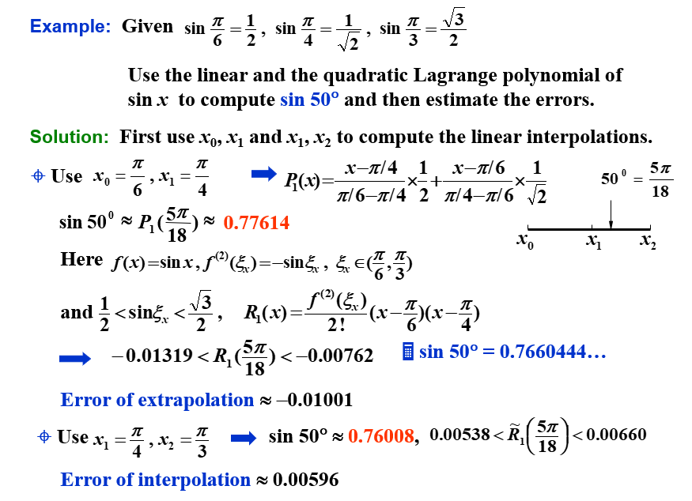
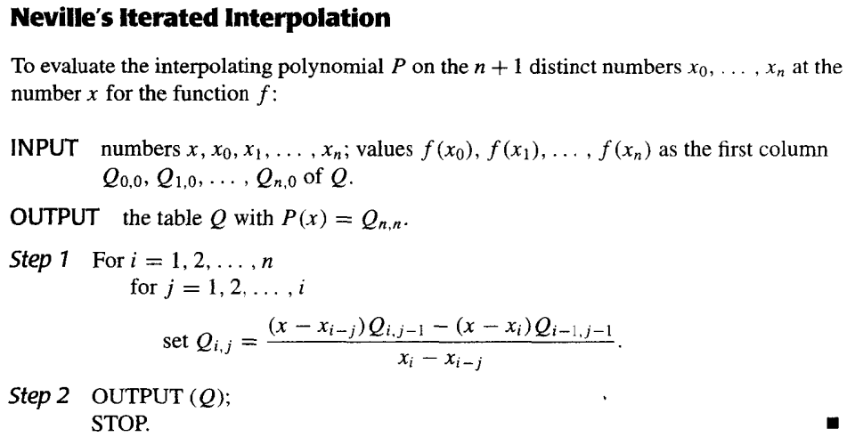
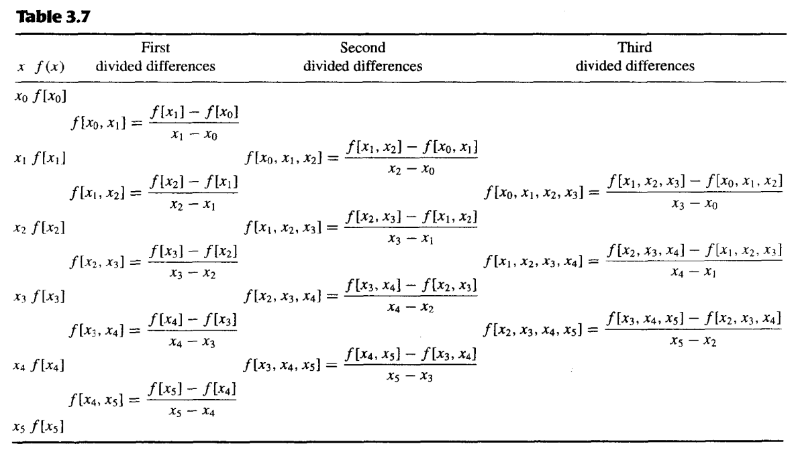
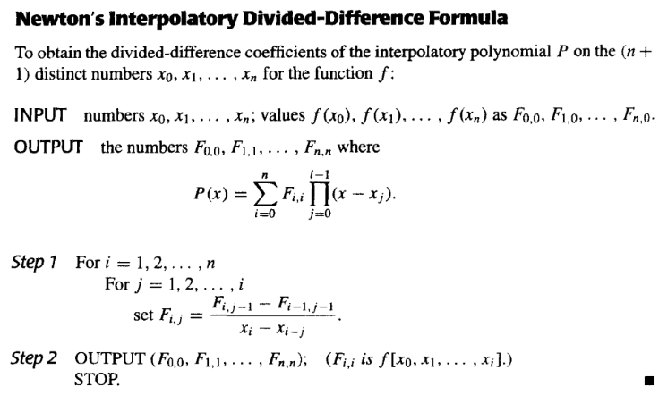
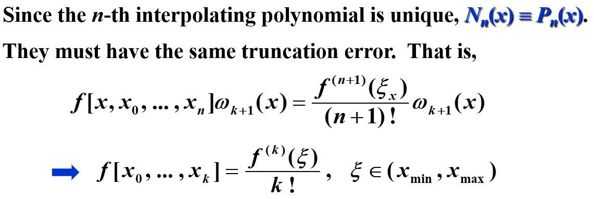
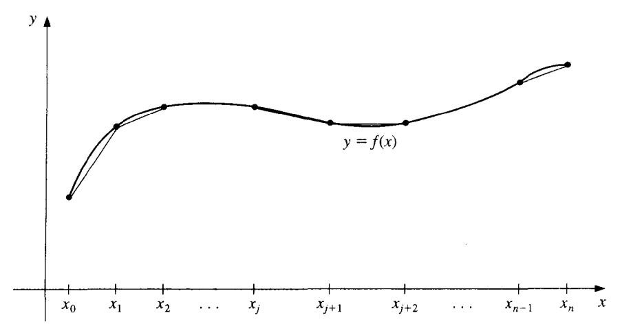
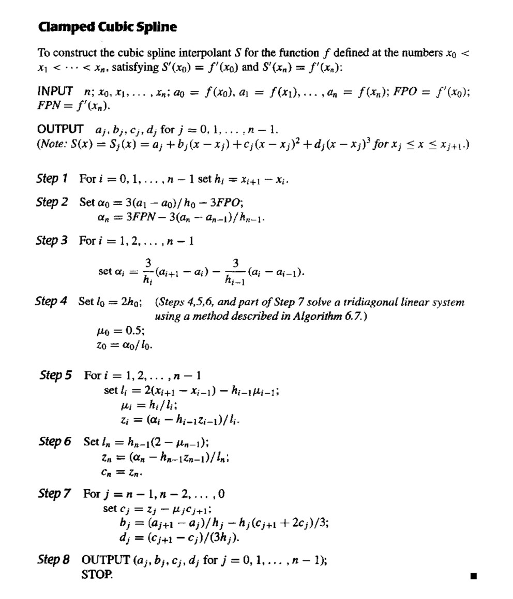

Chapter 3 插值和多项式逼近 | Interpolation and Polynomial Approximation¶
约 6768 个字 预计阅读时间 34 分钟
3.1 插值和 Lagrange 多项式 | Interpolation and Lagrange Polynomials¶
构造 Lagrange 多项式¶
拉格朗日插值就是构造一个次数至多为 \(n\) 次的多项式使它通过 \(n+1\) 个给定的点，这个多项式就是拉格朗日多项式。
\(n = 1\)
构造\(P(x)=a_0+a_1x\)，使得\(P(x_0)=y_0\)，\(P(x_1)=y_1\)。
则\(P(x)=y_0+\frac{y_1-y_0}{x_1-x_0}(x-x_0)=\frac{x-x_1}{x_0-x_1}y_0+\frac{x-x_0}{x_1-x_0}y_1\)。
其中\(\frac{x-x_1}{x_0-x_1}\)和\(\frac{x-x_0}{x_1-x_0}\)分别记作\(L_{1,0}(x)\)和\(L_{1,1}(x)\)（第一个下标即为\(n\)的值，第二个下标为样本点的序号），这称为拉格朗日基函数（Lagrange Basis）。
可以知道，拉格朗日基函数总是满足Kronecker Delta函数\(\delta_{ij}\)。
推广到\(n\)次插值，构造\(P(x)=a_0+a_1x+\cdots+a_nx^n\)，使得\(P(x_i)=y_i\)，\(i=0,1,\cdots,n\)。就是要找到 \(L_{n,i}(x)\) 使得 \(L_{n,i}(x_j) = \delta_{ij}\)
分析可知，这里的\(L_{n,i}(x)\)有 \(n\) 个根，分别为\(x_0,x_1,\cdots,x_{i-1},x_{i+1},\cdots,x_n\)。所以可以构造出
又因为\(L_{n,i}(x_i)=1\)，所以
即
于是我们根据拉格朗日基函数构造出了 \(n\) 次拉格朗日插值多项式
Lagrange 多项式的唯一性¶
对 \(n\) 个不同的点 ， \(n\) 次拉格朗日插值多项式是唯一的
证明：
如果不唯一，假设存在另一个多项式\(Q_n(x)\)，使得\(Q_n(x_i)=y_i\)，\(i=0,1,\cdots,n\)，且\(Q_n(x)\neq P_n(x)\)。
则\(R_n(x)=P_n(x)-Q_n(x)\)是一个次数不超过\(n\)的多项式，且\(R_n(x_i)=0\)，\(i=0,1,\cdots,n\)。
由于\(R_n(x)\)的次数不超过\(n\)，\(n\)次多项式不可能有 \(n+1\) 个解，所以\(R_n(x)=0\)，即\(P_n(x)=Q_n(x)\)，与假设矛盾。
如果 对 \(n\) 个点 运用 超过\(n\) 次的拉格朗日插值多项式，那么得到的多项式就不唯一了。
例如 \(P(x)=L_n\left(x\right)+p(x)\prod\limits_{i=0}^n\left(x-x_i\right)\)
拉格朗日逼近的余项¶
假定\(a\leq x_0<x_1<\cdots<x_n\leq b\)，\(f\in C[a,b]\)，\(P_n(x)\)是\(f(x)\)在\(x_0,x_1,\cdots,x_n\)上的拉格朗日插值多项式，则对任意\(x\in[a,b]\)，存在\(\xi(x)\in(a,b)\)，使得
证明
记\(R_n(x)=f(x)-P_n(x)\)，则\(R_n(x)\)是一个次数不超过\(n\)的多项式，且\(R_n(x_i)=0\)，\(i=0,1,\cdots,n\)。所以\(R_n(x)\)可记作\(C(x)\prod\limits_{i=0}^n(x-x_i)\)
固定一个点\(x\) (\(x\neq x_i\)) 时，记\(g(t)=R_n(t)-C(x)\prod\limits_{i=0}^n(t-x_i)\)，则\(g(x)=0\)，\(g(x_i)=0\)，\(i=0,1,\cdots,n\)，所以\(g(t)\)存在\(n+2\)个不同的零点
根据推广的Rolle定理，存在\(\xi(x)\in(a,b)\)，使得\(g^{(n+1)}(\xi(x))=0\)，即
所以\(C(x)=\frac{f^{(n+1)}(\xi(x))}{(n+1)!}\)，所以\(R_n(x)=\frac{f^{(n+1)}(\xi(x))}{(n+1)!}\prod\limits_{i=0}^n(x-x_i)\)
因为这里的\(f^{(n+1)}(\xi(x))\)是不知道的，所以我们经常用\(f^{(n+1)}(x)\)的上界来估计余项。
分析余项可知，对于小于等于 \(n\) 次的多项式 \(f\) ，经过\(n\)次拉格朗日插值得到的余项为0，得到的多项式就是 \(f\) 本身
这里限制了\(f\)为多项式
例子 1¶
假设为 \(x\in [0,1]\) 的函数 \(f(x)=e^x\) 做一个表格。设表中每一项精确的位数是 \(d\geq 8\)，相邻 \(x\) 值之差即步长为 \(h\)。为使线性插值（即一次Lagrange插值）的误差不超过 \(10^{-6}\)，\(h\)应该是多少？
解：
假设 \([0, 1]\) 被分成 \(n\) 个等距的子区间 \([x_0, x_1], [x_1, x_2], \cdots, [x_{n-1} , x_n]\)，\(x\) 在区间 \([x_k, x_{k+1}]\) 中。则误差估计为
所以 \(h\leq 1.72\times 10^{-3}\)。我们不妨取 \(h=10^{-3}\)，则 \(n=1000\)。
例子 2¶

给三个点，我们有两种方法来线性插值。往往，内插(Intrapolation) 会比 外插(Extrapolation) 更加准确。

高次的拉格朗日插值一般会比低次的插值更加准确，但是这不一定总成立。
Neville 迭代插值法¶
记号说明： 设 \(f\) 在 \(x_0,x_1,\cdots,x_n\) 上有定义，\(m_1,m_2,\cdots,m_k\) 是 \(k\) 个不同的整数，\(0\leq m_i\leq n\)，\(i=1,2,\cdots,k\)。记在这 \(k\) 个点上与 \(f(x)\) 相同的拉格朗日多项式为 \(P_{m_1,m_2,\cdots,m_k}(x)\)。
定理： 设 \(f\) 在 \(x_0,x_1,\cdots,x_n\) 上有定义，让 \(x_i\) 和 \(x_j\) 是这个集合中的两个不同的数。则
描述了对 \(f\) 在 \(x_0,x_1,\cdots,x_k\) 这 \(k+1\)个点 上的 \(k\) 次插值多项式。
五个点

证明：
对于任意 \(0\leq r\leq k\)，\(r\neq i\) 和 \(r\neq j\)，分子上的两个插值多项式在 \(x_r\) 处都等于 \(f(x_r)\)，所以 \(P(x_r)=f(x_r)\)。
分子上的第一个多项式在 \(x_i\) 处等于 \(f(x_i)\)，而第二个多项式在 \(x_i\) 处为0，所以 \(P(x_i)=f(x_i)\)。同理 \(P(x_j)=f(x_j)\)。
所以 \(P(x)\) 在 \(x_0,x_1,\cdots,x_k\) 上与 \(f(x)\) 相同，因为 \(P(x)\) 是 \(k\) 次多项式，所以 \(P(x)=P_{0,1,\cdots,k}(x)\)。
伪代码¶

3.2 Divided Differences | 差商¶
Newton's Interpolatory Divided-Difference formula | 差商型 Newton 插值多项式¶
设 \(P_n(x)\) 是函数 \(f\) 在点 \(x_0, x_1,\cdots,x_n\) 上的拉格朗日多项式，\(f\) 关于 \(x_0,x_1,\cdots,x_n\) 的差商被用于将 \(P_n(x)\) 表示为：
其中 \(f[x_0,x_1,\cdots,x_n]\) 是 \(f\) 关于 \(x_0,x_1,\cdots,x_n\) 的差商，通过代值可以得到
我们记 \(f[x_0], f[x_0,x_1],\cdots,f[x_0,x_1,\cdots,x_n]\) 为 \(f\) 关于 \(x_0,x_1,\cdots,x_n\) 的 \(0\) 阶差商，\(1\) 阶差商，\(\cdots\)，\(n\) 阶差商。
六个点的三阶差商计算的例子

同时，我们称
为差商型 Newton 插值多项式(Newton's Interpolatory Divided-Difference formula)。
伪代码¶

差商和导数的关系¶
一阶差分¶
将中值定理应用到 \(f\) 在 \([x_0,x_1]\) 上，得到
\(n\) 阶差分¶
设 \(f\in C^n[a,b]\) 且 \(x_0,x_1,\cdots,x_n\in[a,b]\)，则存在 \(\xi\in(a,b)\)，使得
证明：
设 \(g(t)=f(t)-P_n(t)\)，则 \(g(x_i)=0\)，\(i=0,1,\cdots,n\)。所以 \(g(t)\) 在 \([x_0,x_n]\) 上有 \(n+1\) 个零点，根据推广的 Rolle 定理，存在 \(\xi\in(a,b)\)，使得 \(g^{(n)}(\xi)=0\)，即
所以 \(P_n^{(n)}(\xi)=f^{(n)}(\xi)\)，因为
所以
PPT上采用的证明方法

差分记号引入¶
如果每个点都连续等步长排列，记步长为\(h\)，令\(x_i=x_0+ih\)，则
引入向前差分(forward difference)记号：
引入向后差分(backward difference)记号：
引入中心差分(central difference)记号：
其中
等距下的向前差商公式¶
在等距情况下，向前差商的公式可表示为：
这里的 \(\begin{pmatrix}s\\k\end{pmatrix}\) 是组合数，即 \(\frac{s(s-1)\cdots(s-k+1)}{k!}\)
等距下的向前差分公式¶
由向前差分的记号可知道
由此可推广得出
所以
此即为向前差分的公式
等距下的向后差商公式¶
重排插值节点再计算，此时：
在等距情况下，记 \(x_s=x_n+sh=x_i+(s+n-i)h\)，有
这里的 \(\begin{pmatrix}-s\\k\end{pmatrix}\) 是组合数，即 \(\frac{-s(-s-1)\cdots(-s-k+1)}{k!}=(-1)^k \cdot \frac{s(s+1)\cdots(s+k-1)}{k!}\)
等距下的向后差分公式¶
由向后差分的记号可知道
由此可推广得出
所以
3.3 Hermite Interpolation | Hermite 插值¶
Hermite 插值的目标是找到一个插值多项式
Osculating polynomials | 密切多项式¶
在 \(x_0,x_1,\cdots,x_n\) 上逼近 \(f\in C^m[a,b]\) 的密切多项式(osculating polynomial) 是具有以下性质的多项式 \(P_n(x)\)：
- \(P_n(x)\) 在 \(x_0,x_1,\cdots,x_n\) 上与 \(f(x)\) 相同
- 对每个 \(x_i\)，\(P_n(x)\) 和 \(f(x)\) 在 \(x_i\) 处的前 \(m_i\) 阶导数相同
- 因此，我们可以得到 \(\sum\limits_{i=0}^n(m_i+1)=\sum\limits_{i=0}^nm_i+(n+1)\) 个条件，于是 \(P_n(x)\) 是一个次数至多为 \(\sum\limits_{i=0}^nm_i+n\) 的多项式
我们给出密切多项式的定义：
定义： 设 \(x_0,x_1,\cdots,x_n\) 是 \([a,b]\) 上的 \(n+1\) 个不同的点，\(m_0,m_1,\cdots,m_n\) 是 \(n+1\) 个非负整数，假设$ f\in C^m[a,b]$，其中 \(m=\max\limits_{0\leq i\leq n}m_i\)。逼近 \(f\) 的密切多项式 \(P_n(x)\) 是使得下式成立的最小次数的多项式：
- 当 \(n=0\) 时，逼近 \(f\) 的密切多项式是 \(f\) 在 \(x_0\) 处的 \(m_0\) 阶 Taylor 多项式。
- 当 \(m_i=0\) 时，密切多项式就是对 \(f\) 在 \(x_0,x_1,\cdots,x_n\) 上插值的 \(n\) 次拉格朗日插值多项式。
Hermite 插值多项式¶
对密切多项式 \(m_i=1\) 的情况，我们定义其为 Hermite 多项式。也就是说，多项式 \(P(n)\) 和它的一阶导数 \(P'(n)\) 在 \(x_i\) 处与 \(f\) 和 \(f'\) 相同。
特殊例子¶
假设 \(x_0\neq x_1 \neq x_2\)，给定 \(f(x_0),f(x_1),f(x_2),f'(x_1)\)，找到多项式使得\(P(x_i)=f(x_i)\)，\(P'(x_1)=f'(x_1)\)。
首先，其次数为3次，我们猜想其形式为
其中\(h_i(x_j)=\delta_i(x_j),h'_i(x_1)=0,\hat{h}_1(x_i)=0,\hat{h}'_1(x_1)=1\)。
根据这个猜想，我们试图构造出 \(h_i(x)\) 和 \(\hat{h}_1(x)\) 。
首先，我们可以用拉格朗日同样的方法构造出三次多项式\(h_i(x)\)，使得\(h_i(x_j)=\delta_i(x_j)\)，\(h'_i(x_1)=0\)，\(i=0,1,2\)。
对于\(h_0(x)\)，有根\(x_1,x_2\)，且因为 \(h'_0(x_1)=0\) 所以 \(x_1\) 是 \(h_0(x)\) 的二重根，所以其形式为
又因为\(h'_0(x_0)=1\)，所以
类似地，我们可以得到
对于\(h_1(x)\)，有根\(x_0,x_2\)，都是单根。所以其形式为
通过计算 \(h_1(x_1)=1\)，\(h'_1(x_1)=0\)，可以得到 \(A\) 和 \(B\) 的值。此处略。
然后，我们构造\(\hat{h}_1(x)\)，使得\(\hat{h}_1(x_i)=0\)，\(\hat{h}'_1(x_1)=1\)。对于\(\hat{h}_1(x)\)，有根\(x_0,x_1,x_2\)，所以
又因为\(\hat{h}'_1(x_1)=1\)，所以可以通过计算得到 \(C\) 的值。此处略。
一般情况¶
如果已知 \(f(x_0),f(x_1),\cdots,f(x_n)\) 和 \(f'(x_0),f'(x_1),\cdots,f'(x_n)\)，则可以构造出 Hermite 插值多项式
其中\((2n+1)\)阶多项式\(h_i(x_j)=\delta_i(x_j),h'_i(x_j)=0,\hat{h}_i(x_j)=0,\hat{h}'_i(x_j)=\delta_i(x_j)\)。
对于\(h_i(x)\)，有根\(x_0,x_1,\cdots,x_{i-1},x_{i+1},\cdots,x_n\)，且因为 \(h'_i(x_j)=0(j\neq i)\) 所以 \(x_j\) 是 \(h_i(x)\) 的 \(2\) 重根，所以其形式为
这里的常系数改变是因为引入 \(L_{n,i}(x)\) 的话，它相较前面的有额外系数
因为\(h_i(x_i)=1\)，\(h'_i(x_i)=0\)，所以
对于\(\hat{h}_i(x)\)，有根\(x_0,x_1,\cdots,x_n\)，且因为 \(\hat{h}'_i(x_j)=0(j\neq i)\)，\(\hat{h}'_i(x_i)=1\) 所以 \(x_i\) 是 \(\hat{h}_i(x)\) 的 \(1\) 重根，其余的都是 \(2\) 重根，所以其形式为
因为\(\hat{h}'_i(x_i)=1\)，所以
余项¶
如果 \(a=x_0<x_1<\cdots<x_n=b\)，\(f\in C^{2n}[a,b]\)，余项为
3.4 Cubic Spline Interpolation | 三次样条插值¶
Piecewise-polynomial approximation | 分段多项式逼近¶
最简单的分段多项式逼近是分段线性逼近，即在每个子区间上用一个一次多项式逼近函数 \(f\)。但是，分段线性逼近的函数不光滑，所以我们希望用更高次的多项式来逼近 \(f\)。

一个可替代的方法是使用 Hermite 插值多项式。例如，如果 \(f\) 和 \(f'\) 的值在每一个点 \(x_i\) 处都已知，那么我们可以在每个子区间上使用一个三次多项式来逼近 \(f\)。这样的逼近是光滑的，但是为了将该多项式应用于一般插值，需要知道所有的 \(f'\) 的值，这是不现实的。
由此，我们引入了三次样条插值。
Cubic spline interpolation | 三次样条插值¶
三次样条的构造不假设插值函数的导数值与原函数的导数值相等，即使在插值点处也如此。
给定在 \([a,b]\) 上的 \(n+1\) 个点 \(x_0,x_1,\cdots,x_n\)，\(a=x_0<x_1<\cdots<x_n=b\)，以及 \(f\)。三次样条插值是一个函数 \(S(x)\)，满足以下条件：
- \(S(x)\) 在每个子区间 \([x_i,x_{i+1}]\) 上是一个三次多项式，\(i=0,1,\cdots,n-1\)
- \(S(x_i)=f(x_i)\)，\(i=0,1,\cdots,n\)
- \(S_{i+1}(x_{i+1})=S_i(x_{i+1})\)，\(i=0,1,\cdots,n-2\)
- \(S'_{i+1}(x_{i+1})=S'_i(x_{i+1})\)，\(i=0,1,\cdots,n-2\)
- \(S''_{i+1}(x_{i+1})=S''_i(x_{i+1})\)，\(i=0,1,\cdots,n-2\)
- 下列的边界条件之一成立：
- \(S''(x_0)=S''(x_n)=0\)，称为自由或自然边界(free or natural boundary)
- \(S'(x_0)=f'(x_0)\)，\(S'(x_n)=f'(x_n)\)，称为固支边界(clamped boundary)
- 其他边界条件（上面两个条件其实已经足以满足目的了）
我们介绍一种构造三次样条插值的方法：
Method of Bending Moments¶
记 \(h_j=x_j-x_{j-1}\)，在 \(x\in[x_{j-1},x_j]\) 上，\(S(x)=S_j(x)\)，\(S'(x)=S'_j(x)\)，\(S''(x)=S''_j(x)\)。
因为 \(S(x)\) 是一个三次多项式，所以 \(S''_j(x)\) 是一个一次多项式，由端点值决定，假设 \(S''_j(x_{j-1})=M_{j-1}\)，\(S''_j(x_j)=M_j\)。那么对于 \(x\in[x_{j-1},x_j]\)，有
积分得到
再积分得到
\(A_j\) 和 \(B_j\) 是常数，可以通过 \(S_j(x_{j-1})=y_{j-1}\) 和 \(S_j(x_j)=y_{j}\) 得到。
所以
所以，我们的目的就是求出 \(M_j\)，\(j=0,1,\cdots,n\)。
因为 \(S'\) 是连续的，所以
在 \([x_{j-1},x_j]\) 上，\(S'_j(x)=-M_{j-1}\frac{(x_j-x)^2}{2h_j}+M_j\frac{(x-x_{j-1})^2}{2h_j}+f[x_{j-1},x_j]-\frac{M_j-M_{j-1}}{6}h_j\)
在 \([x_j,x_{j+1}]\) 上，\(S'_{j+1}(x)=-M_{j}\frac{(x_{j+1}-x)^2}{2h_{j+1}}+M_{j+1}\frac{(x-x_{j})^2}{2h_{j+1}}+f[x_j,x_{j+1}]-\frac{M_{j+1}-M_{j}}{6}h_{j+1}\)
有 \(S'_{j+1}(x_j)=S'_j(x_j)\)，所以我们可以得到 \(M_{j-1}, M_j, M_{j+1}\) 之间的关系：
记 \(\lambda_j=\frac{h_{j+1}}{h_j+h_{j+1}}\)，\(\mu_j=\frac{h_{j}}{h_j+h_{j+1}}\)，\(g_j=\frac{6}{h_j+h_{j+1}}(f[x_j,x_{j+1}]-f[x_{j-1},x_j])\)，则
其中 \(j=1,2,\cdots,n-1\)。
我们有 \(n+1\) 个未知数，\(n-1\)个方程 → 由边界条件增加两个方程
Clamped boundary | 固支边界¶
此时我们知道 \(S'(x_0)=f'(x_0)\)，\(S'(x_n)=f'(x_n)\)，所以
在 \([x_0,x_1]\) 上，\(S'_1(x)=-M_0\frac{(x_1-x)^2}{2h_1}+M_1\frac{(x-x_0)^2}{2h_1}+f[x_0,x_1]-\frac{M_1-M_0}{6}h_1\)
在 \([x_{n-1},x_n]\) 上，\(S'_n(x)=-M_{n-1}\frac{(x_n-x)^2}{2h_n}+M_n\frac{(x-x_{n-1})^2}{2h_n}+f[x_{n-1},x_n]-\frac{M_n-M_{n-1}}{6}h_n\)
所以我们额外有两个方程：
所以我们可以得到
Natural boundary | 自由边界¶
如果 \(S''(x_0)=y''_0=M_0\)，\(S''(x_n)=y''_n=M_n\)，则
如果 \(S''(x_0)=S''(x_n)=0\)，则称为自由边界(free boundary)，此时 \(g_0=g_n=0\)。
自由边界的情况下，有 \(S''(x_0)=S''(x_n)=0\)。
书上的方法¶
我们介绍另一种构造三次样条插值的方法：
给定在 \([a,b]\) 上的 \(n+1\) 个点 \(x_0,x_1,\cdots,x_n\)，\(a=x_0<x_1<\cdots<x_n=b\)，设三次多项式 \(S_j(x)\) 为
且满足
- \(S(x)\) 在每个子区间 \([x_i,x_{i+1}]\) 上是一个三次多项式，\(i=0,1,\cdots,n-1\)
- \(S(x_i)=f(x_i)\)，\(i=0,1,\cdots,n\)
- \(S_{i+1}(x_{i+1})=S_i(x_{i+1})\)，\(i=0,1,\cdots,n-2\)
- \(S'_{i+1}(x_{i+1})=S'_i(x_{i+1})\)，\(i=0,1,\cdots,n-2\)
- \(S''_{i+1}(x_{i+1})=S''_i(x_{i+1})\)，\(i=0,1,\cdots,n-2\)
- 下列的边界条件之一成立：
- \(S''(x_0)=S''(x_n)=0\)，称为自由或自然边界(free or natural boundary)
- \(S'(x_0)=f'(x_0)\)，\(S'(x_n)=f'(x_n)\)，称为固支边界(clamped boundary)
- 其他边界条件（上面两个条件其实已经足以满足目的了）
记 \(h_j=x_j-x_{j-1}\)，由条件3，可得
又由条件4，因为 \(S'(x)=b_j+2c_j(x-x_j)+3d_j(x-x_j)^2\)，所以
又由条件5，因为 \(S''(x)=2c_j+6d_j(x-x_j)\)，所以
所以
把最后一个式子代入前两个式子，消去 \(d_j\)，得到
为了减少未知数，我们有
所以
因为 \(a_j\), \(h_j\) 已知，所以上式未知量仅为 \(c_j\)，而且求出 \(c_j\) 后，\(b_j\) 也就求出了。（\(b_j=\frac{1}{h_j}(a_{j+1}-a_j)-\frac{h_j}{3}(2c_j+c_{j+1})\)）
所以我们有 \(n-1\) 个方程，\(n+1\) 个未知数，所以我们需要额外的两个方程。
Natural boundary | 自由边界¶
书上给的是 \(S''(a)=S''(b)=0\)，实际上，我们在做题中扩展到了 \(S''(a)=s_0\)，\(S''(b)=s_n\)，此时
所以，我们可以将上面的方程组写成 \(\mathbf{Ax}=\mathbf{b}\) 的形式，其中 \(\mathbf{A}\) 为 \((n+1)\times(n+1)\) 的矩阵
\(\mathbf{b}\) 和 \(\mathbf{x}\) 为 \((n+1)\times1\) 的向量
因为矩阵 \(\mathbf{A}\) 是严格对角占优的，所以该方程组有唯一解。
伪代码¶

固支边界¶
固支边界要求 \(S'(a)=f'(a)\)，\(S'(b)=f'(b)\)。
因为 \(f'(a)=S'(a)=S'(x_0)=b_0\)，\(f'(b)=S'(b)=S'(x_n)=b_n\)，所以
所以，我们可以将上面的方程组写成 \(\mathbf{Ax}=\mathbf{b}\) 的形式，其中 \(\mathbf{A}\) 为 \((n+1)\times(n+1)\) 的矩阵
\(\mathbf{b}\) 和 \(\mathbf{x}\) 为 \((n+1)\times1\) 的向量
因为矩阵 \(\mathbf{A}\) 是严格对角占优的，所以该方程组有唯一解。
伪代码¶

Properties of cubic splines | 三次样条的性质¶
- 只要系数矩阵严格对角占优（实际上是确保可逆），三次样条就可以由其边界条件唯一确定。
- 如果 \(\frac{\max h_i}{\min h_i}\) 有界，那么 \(S(x)\) 是收敛的。
- 增加点可以更贴近原函数。